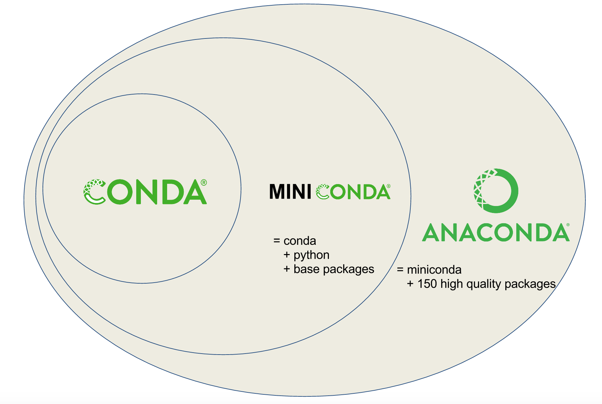
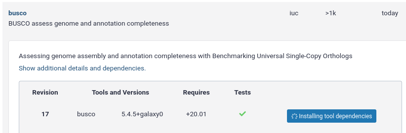
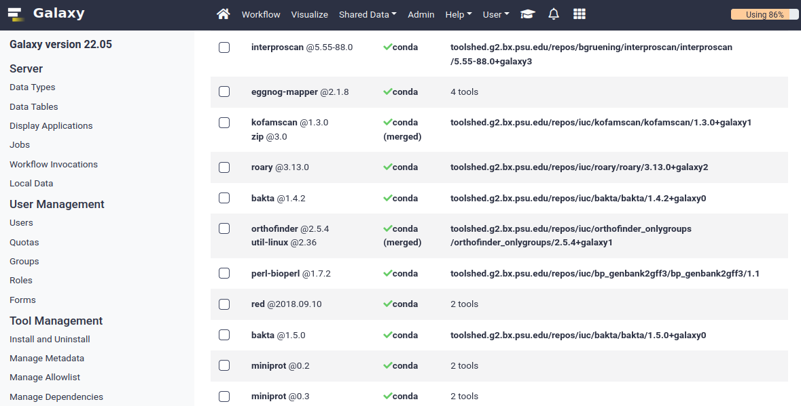
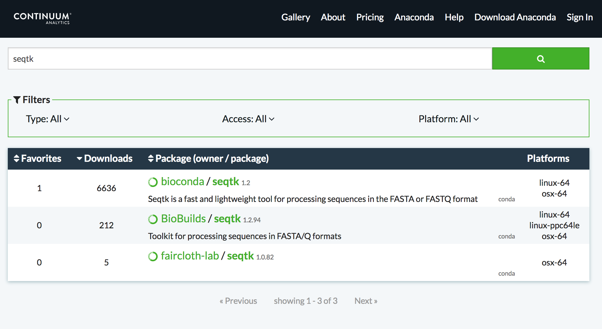

Tool Dependencies and Conda
Contributors
Questions
How can I connect tools to applications and libraries?
What are the advantages of declaring dependencies for my tool?
What are Conda and Bioconda?
What are Conda recipes and environments?
How do I find and use existing Conda recipes?
How do I develop Conda recipes for use within Galaxy tools?
Objectives
Learn to use existing Conda recipes to enable best practice tool dependency management in Galaxy.
Learn the basics of building Conda recipes and contributing to Bioconda.
Learn to use Planemo to assist in developing Galaxy tools from existing and new Conda recipes.
Requirements
- slides Slides: Tool development and integration into Galaxy
- tutorial Hands-on: Tool development and integration into Galaxy
- slides Slides: Prerequisites for building software/conda packages
Planemo
These slides mirror the section on “Dependencies and Conda” in the Planemo Documentation.
Galaxy Dependencies
class: left, enlarge120
Example Tool (1 / 2)
From Planemo docs - the following example builds a tool for the seqtk seq command.
$ planemo tool_init --force \
--id 'seqtk_seq' \
--name 'Convert to FASTA (seqtk)' \
--requirement seqtk@1.2 \
--example_command 'seqtk seq -a 2.fastq > 2.fasta' \
--example_input 2.fastq \
--example_output 2.fasta \
--test_case \
--cite_url 'https://github.com/lh3/seqtk' \
--help_from_command 'seqtk seq'
Notice the --requirement seqtk@1.2.
class: left, enlarge120
Example Tool (2 / 2)
The --requirement seqtk@1.2 gets translated into the following Galaxy tool XML:
<requirements>
<requirement type="package" version="1.2">seqtk</requirement>
</requirements>
Dependency Resolution

Speaker Notes
- Notice that multiple tools may be mapped to the same requirements and any tools may use multiple Conda recipes.
- There are few different ways to populate Applications and Libraries on the right - we will talk about Conda which is what we consider the “community best practice”.
class: enlarge120

Package, dependency and environment management
class: enlarge120
###.image-25[ ]
]
Conda Terminology
Conda recipes build packages that are published to channels.
class: enlarge120
.image-25[ ]
]
Conda Key Features for Galaxy
-
No compilation at install time - binaries with their dependencies, libraries…
-
Support for all operating systems Galaxy targets
-
Easy to manage multiple versions of the same recipe
-
HPC-ready: no root privileges needed
-
Easy-to-write YAML recipes
-
Vibrant Communities
Speaker Notes
- Recipes: independent of the programming language in which software is written
- Support for multiple versions at the same time is needed for reproducibility
Compared with the Tool Shed dependency management (tool_dependencies.xml), BioConda is:
- More popular!
- Easier to develop.
- Easier to install and test.
###.image-25[ ]
]
Conda Distributions

class: enlarge120
###.image-25[ ]
]
Best Practice Channels
-
Packages through channels within Continuum.
-
Conda channels searched by Galaxy for packages
- iuc (legacy)
- conda-forge
- bioconda
- defaults
.footnote[If you are interested in Natural Language Processing or Cheminformatics you may be asking if these channels can still work for your tools. Despite the name Bioconda - it is really more about community and a set of best practices than about bioinformatics purity - many diverse packages have been integrated.]
class: left, enlarge120
###.image-25[ ]
]
Install and Configure
$ planemo conda_init
$ export PATH=$PATH:~/miniconda3/bin
$ which conda
/Users/john/miniconda3/bin/conda
Planemo installs Conda using miniconda and configured defaults designed to easy development.
This has already been done on Planemo machine.
class: enlarge120
###.image-25[ ]
]
Quickstart
Using Conda outside Planemo
- Install some packages within an isolated environment
$ conda create -n yaml pyyaml
$ conda env list
base * ~/miniconda3
yaml ~/miniconda3/envs/yaml
$ conda activate yaml
(yaml) $
- Install a package in the current environment
$ conda install pyyaml
class: enlarge150
Conda and Galaxy
Galaxy now automatically installs Conda when first launched and will use Bioconda and other channels for package resolution.
Installing Tools with Conda

Managing Tool Dependencies

class: enlarge150
Conda and Planemo
Using Conda directly is generally package-centric, Planemo provides abstractions that are tool-centric.
class: left, enlarge120
The next few slides will use the seqtk example from Planemo’s documentation - this can be downloaded to follow along using the following command:
$ planemo project_init --template=seqtk_complete seqtk_example
$ cd seqtk_example
class: left
Linting Conda Dependencies
.enlarge120[Planemo can check if the requirements of a tool are available in best practice Conda channels using the --conda_requirements flag of planemo lint.]
$ planemo lint --conda_requirements seqtk_seq.xml
Linting tool /Users/john/workspace/planemo/docs/writing/seqtk_seq_v6.xml
...
Applying linter requirements_in_conda... CHECK
.. INFO: Requirement [seqtk@1.2] matches target in best practice Conda channel [bioconda].
.enlarge120[Notice Planemo indicates this tool is available and shows the channel it is available in.]
class: left
The Planemo conda_install command
.reduce70[```sh $ planemo conda_install seqtk_seq.xml Install conda target CondaTarget[seqtk,version=1.2] /home/john/miniconda3/bin/conda create -y –name __seqtk@1.2 seqtk=1.2 Fetching package metadata …………… Solving package specifications: ………. Package plan for installation in environment /home/john/miniconda3/envs/__seqtk@1.2: The following packages will be downloaded: package | build —————————|—————– seqtk-1.2 | 0 29 KB bioconda The following NEW packages will be INSTALLED: seqtk: 1.2-0 bioconda zlib: 1.2.8-3 Fetching packages … …. #
To deactivate this environment, use:
> source deactivate __seqtk@1.2
# $ which seqtk seqtk not found
Notice seqtk hasn't been placed on the `PATH`, an environment has been setup that Galaxy (when
used through Planemo) can leverage.
---
class: enlarge120
### The Planemo `conda_env` command
.reduce70[```sh
$ . <(planemo conda_env seqtk_seq.xml)
Deactivate environment with conda_env_deactivate
(seqtk_seq) $ which seqtk
/home/planemo/miniconda2/envs/jobdepsiJClEUfecc6d406196737781ff4456ec60975c137e04884e4f4b05dc68192f7cec4656/bin/seqtk
(seqtk_seq) $ seqtk seq
Usage: seqtk seq [options] <in.fq>|<in.fa>
Options: -q INT mask bases with quality lower than INT [0]
-X INT mask bases with quality higher than INT [255]
-n CHAR masked bases converted to CHAR; 0 for lowercase [0]
-l INT number of residues per line; 0 for 2^32-1 [0]
...
-V shift quality by '(-Q) - 33'
-U convert all bases to uppercases
-S strip of white spaces in sequences
(seqtk_seq) $ conda_env_deactivate
$
```]
---
## Using the Tool Environment
Now that we have verified the Conda environment setup with `conda_install` works properly on the
command-line, we can use our tool!
`planemo test` and `planemo serve` will use this environment by default now for this tool.
---
class: left
### Planemo `test`
.reduce70[```sh
$ planemo test seqtk_seq.xml
...
INFO [galaxy.tools.actions] Handled output named output1 for tool seqtk_seq (20.136 ms)
INFO [galaxy.tools.actions] Added output datasets to history (12.782 ms)
INFO [galaxy.tools.actions] Verified access to datasets for Job[unflushed,tool_id=seqtk_seq] (10.954 ms)
INFO [galaxy.tools.actions] Setup for job Job[unflushed,tool_id=seqtk_seq] complete, ready to flush (21.053 ms)
INFO [galaxy.tools.actions] Flushed transaction for job Job[id=2,tool_id=seqtk_seq] (26.510 ms)
INFO [galaxy.jobs.handler] (2) Job dispatched
DEBUG [galaxy.tools.deps] Using dependency seqtk version 1.2 of type conda
DEBUG [galaxy.tools.deps] Using dependency seqtk version 1.2 of type conda
INFO [galaxy.jobs.command_factory] Built script [/tmp/tmpLvKwta/job_working_directory/000/2/tool_script.sh] for tool command [[ "$CONDA_DEFAULT_ENV" = "/Users/john/miniconda2/envs/__seqtk@1.2" ] || . /Users/john/miniconda2/bin/activate '/Users/john/miniconda2/envs/__seqtk@1.2' >conda_activate.log 2>&1 ; seqtk seq -a '/tmp/tmpLvKwta/files/000/dataset_1.dat' > '/tmp/tmpLvKwta/files/000/dataset_2.dat']
DEBUG [galaxy.tools.deps] Using dependency samtools version None of type conda
DEBUG [galaxy.tools.deps] Using dependency samtools version None of type conda
ok
----------------------------------------------------------------------
XML: /private/tmp/tmpLvKwta/xunit.xml
----------------------------------------------------------------------
Ran 1 test in 15.936s
OK
```]
.enlarge120[
The following line indicates the seqtk package was found:
[galaxy.tools.deps] Using dependency seqtk version 1.2 of type conda
]
---
<hands-on-title>Hands-on</hands-on-title>

---
<hands-on-title>Hands-on</hands-on-title>
#### The Goal
- Use the Planemo commands `conda_install`, `conda_env`, and `test` to practice the Galaxy tool dependency development lifecycle.
---
<hands-on-title>Hands-on</hands-on-title>
#### Steps
Run the following commands to practice working with Galaxy tools, Planemo, and Conda.
```bash
$ planemo project_init --template=seqtk_complete seqtk_example
$ cd seqtk_example
$ planemo conda_install seqtk_seq.xml
$ . <(planemo conda_env seqtk_seq.xml)
$ planemo test seqtk_seq.xml
class: enlarge120
Finding the Correct Requirements & Packages
The previous example worked because a published Bioconda recipe named seqtk at version 1.2
was previously published, but how can these be found?
Two easy approaches are using planemo conda_search and using the Anaconda web search.
class: left
Using the Planemo conda_search Command
The Planemo conda_search command is a shortcut around conda search that searches best
practice channels that Galaxy is configured to work with:
$ planemo conda_search seqt
Fetching package metadata ...............
seqtk r75 0 bioconda
r82 0 bioconda
r93 0 bioconda
1.2 0 bioconda
Alternatively, conda can be used directly:
$ $HOME/miniconda3/bin/conda search -c iuc -c conda-forge -c bioconda seqtk
Using Anaconda Search - https://anaconda.org
Using Anaconda Search - https://anaconda.org

Speaker Notes
Notice that only one of these results is a best practice channel and so that is the only one that will be used by Galaxy by default.

The Goal
- Find the correct package and version for a tool in a best practice channel.
- Add a requirement to a tool to allow Galaxy to find, install, and use a Conda package.
Steps
- Run the following commands to download an example tool to modify.
$ planemo project_init --template conda_exercises conda_exercises $ cd conda_exercises/exercise1 $ ls pear.xml test-data - Run
planemo test pear.xmlto verify the tool does not function without dependencies defined. - Use
--conda_requirementsflag withplanemo lintto verify it does indeed lack requirements. - Use
planemo conda_searchor the Anaconda website to search for the correct package and version in a best practice channel. - Update pear.xml with the correct requirement tags.
- Re-run the
lintcommand from above to verify the tool now has the correct dependency definition. - Re-run the
testcommand from above to verify the tool test now works properly.
Writing a Conda recipe
-
If searching best practice channels fails, you may need to build a Conda recipe.
-
A Conda recipe is defined by a directory, the two most important files in this directory are:
meta.yaml: contains all the metadata of the recipebuild.sh: the (optional) Unix script that installs the files
.footnote[conda-build user guide
Bioconda guidelines]
class: left
meta.yaml
meta.yaml contains basic metadata about the recipe.
{% set version = "0.7.17" %}
{% set sha256 = "980b9591b61c60042c4a39b9e31ccaad8d17ff179d44d347997825da3fdf47fd" %}
package:
name: bwa
version: {{ version }}
source:
url: https://github.com/lh3/bwa/archive/v{{ version }}.tar.gz
sha256: {{ sha256 }}
patches:
- Makefile.patch
build:
number: 7
about:
home: https://github.com/lh3/bwa
license: GPL3
license_file: COPYING
summary: The BWA read mapper.
meta.yaml > requirements
requirements:
build:
- {{ compiler('c') }}
host:
- zlib
run:
- zlib
- perl
build: requirements needed to perform the compilation (if any)host: requirements needed during the build step (here compilation)run: requirements needed at runtime </small>
Preprocessing Selectors
- Common selectors include
linux,osx,py2k,py3k. - Evaluated as Python expressions - feel free to use
and,or, etc.
requirements:
build:
- bz2file # [py < 33]
- typing # [py27 or py34]
build:
skip: True # [osx]
.footer[.center[https://conda.io/projects/conda-build/en/latest/source/define-metadata.html#preprocessing-selectors ]]
class: left
Tests
meta.yaml should contain simple tests. These are commands executed at the end of conda build and expected to return 0 on success.
test:
commands:
- bowtie2 --version
test:
commands:
- bwa 2>&1 | grep 'index sequences in the'
test:
commands:
- '$R -e "library(''xcms'')"'
Please note that the Conda tests run inside the runtime environment and not in the build environment.
.footnote[.center[https://conda.io/projects/conda-build/en/latest/source/define-metadata.html#test-section ]]
From the Bioconda Guidelines:
An adequate test must be included in the recipe. An “adequate” test depends on the recipe, but must be able to detect a successful installation. While many packages may ship their own test suite (unit tests or otherwise), including these in the recipe is not recommended since it may timeout the build system on CircleCI. We especially want to avoid including any kind of test data in the repository.
build.sh
#!/bin/bash
./configure --prefix=$PREFIX
make
make install
#!/bin/bash
mkdir -p $PREFIX/bin
cp *.py $PREFIX/bin
$PREFIXis a variable defined by conda when building the package.$PREFIXusually containsbin/,lib/, andinclude/that are filled with the package files.$PREFIXwill be loaded in the user environment at runtime:PATH,LD_LIBRARY_PATH,PYTHONPATH, … </small>
.footnote[http://training.galaxyproject.org/training-material/topics/dev/tutorials/conda_sys/slides.html]
Skeletons
$ conda skeleton pypi <packagename>
$ conda skeleton cran <packagename>
$ bioconductor_skeleton.py <packagename>
$ conda skeleton cpan <packagename>`
These generate pre-filled recipes (not guaranteed to work out of the box) for specific programming environments.
.footnote[Building conda packages with conda skeleton]
Building
Once the recipe is ready to go, the conda build command can be used to build it.
$ $HOME/miniconda3/bin/conda build .
- BUILD START: Builds/Compiles the package
- BUILD START: Provides a .tar.bz2
- TEST START: Installs the .tar.bz2 previously generated
- TEST START: Launches the functional tests
- (Provides the .tar.bz2 path)
.footnote[If miniconda wasn’t configured with planemo conda_init, you may have
to run conda install conda-build before using the above command.]
.image-75[]
- A channel dedicated to bioinformatics (and other informatics) packages
- https://bioconda.github.io
- https://anaconda.org/bioconda
- Open to contribution
- GitHub repository: https://github.com/bioconda/bioconda-recipes
###.image-25[] contributing 1/2
- Fork Bioconda.
-
Clone your fork:
$ git clone https://github.com/ <myuser> /bioconda-recipes -
Create a new branch
package$ git checkout -b package -
Fill two files
meta.yamlandbuild.shin a new recipe directory - Build your new package and test it using
conda build
###.image-25[] contributing 2/2
-
Commit and push to GitHub
$ git add recipe$ git commit -m 'my recipe description'$ git push origin package -
Create a Pull Request
-
After the PR is merged, wait for the functional tests to pass on the master branch
-
Enjoy your new Conda package at https://anaconda.org/bioconda
Planemo and --conda_use_local
By default, Galaxy and Planemo will ignore locally built packages.
Simply pass --conda_use_local to various Planemo commands (e.g. test, conda_install, or serve) to use the local package
cache.
Enables developing Galaxy tools and Conda recipes in parallel.
The Goal
- Implement and test a local Conda recipe.
- Use Planemo and Galaxy with a locally built package.
class: left
Before
If you have completed exercise1, open exercise2.
$ cd ../exercise2
$ ls
fleeqtk_seq.xml test-data
This directory contains the outline of a tool for fleeqtk. fleeqtk is a fork of the project seqtk that many Planemo tutorials are built around and the example tool fleeqtk_seq.xml should be fairly familiar.
class: left
Steps
- Clone and branch Bioconda (https://github.com/bioconda/bioconda-recipes)
- Build a recipe for fleeqtk version 1.3. You may wish to use conda skeleton, start from scratch, or copy the recipe of seqtk and work from there - any of these strategies should work
- fleeqtk 1.3 can be downloaded using the URL https://github.com/jmchilton/fleeqtk/archive/v1.3.tar.gz
- fleeqtk can be built using
makeand installed withmake install
- Use
conda buildto build the recipe - Add a
requirementfor this new package in the example tool. - Run
planemo conda_install --conda_use_local fleeqtk_seq.xmlto install the package for Galaxy - Run
planemo test fleeqtk_seq.xmlto verify the tool and package work together
Advanced Topics in Conda Development
Jinja Templating
{% set name = "seqtk" %}
{% set version = "1.15.1" %}
package:
name: {{ name }}
version: {{ version }}
source:
url: http://coolsoftware.com/{{ name }}/{{ version }}/{{ name }}-{{ version }}.zip
https://conda.io/projects/conda-build/en/latest/source/define-metadata.html#templating-with-jinja
class: left
Stable URLs
source:
url: https://github.com/lh3/bwa/archive/v0.7.15.tar.gz
md5: 54fdee953c5c256d36885a1c5c6b118c
While supported by Conda,
git_urlandgit_revare not as stable as a git tarball. Ideally a github repo should have tagged releases that are accessible as tarballs from the “releases” section of the github repo. In addition tarballs can be easily mirrored and Bioconda is saving a copy of every tarball so the recipe can be rebuild at any time.
class: left
Python
For PyPI packages
conda skeleton pypi <package_name>
- Builds likely correct
build.shandmeta.yaml. - The test automatically added is probably sufficient for library, may need to write extra tests for command-line tools.
- Recipes requiring
pythonshould build on Python 2.7, 3.5, and 3.6 by default, preprocessing selectors can be used withbuild: skipto skip targets.
Python - pysam’s build.sh
#!/bin/bash
# Remove gcc statements that do not work on older compilers for CentOS5
# support
sed -i'' -e 's/"-Wno-error=declaration-after-statement",//g' setup.py
sed -i'' -e 's/"-Wno-error=declaration-after-statement"//g' setup.py
# linking htslib, see:
# https://pysam.readthedocs.org/en/latest/installation.html#external
# https://github.com/pysam-developers/pysam/blob/v0.9.0/setup.py#L79
export CFLAGS="-I$PREFIX/include"
export CPPFLAGS="-I$PREFIX/include"
export LDFLAGS="-L$PREFIX/lib"
export HTSLIB_LIBRARY_DIR=$PREFIX/lib
export HTSLIB_INCLUDE_DIR=$PREFIX/include
$PYTHON setup.py install
Python - pysam’s meta.yaml
.reduce50[
{% set version = "0.15.2" %}
{% set samtools_version = "1.9" %}
{% set bcftools_version = "1.9" %}
package:
name: pysam
version: '{{ version }}'
source:
url: https://github.com/pysam-developers/pysam/archive/v{{ version }}.tar.gz
sha256: 8cb3dd70f0d825086ac059ec2445ebd2ec5f14af73e7f1f4bd358966aaee5ed3
build:
number: 3
binary_relocation: False # [linux]
requirements:
build:
- {{ compiler('c') }}
host:
- htslib
- samtools {{ samtools_version }}
- bcftools {{ bcftools_version }}
- cython
- python
- setuptools
- zlib
- curl
- libdeflate
run:
- samtools {{ samtools_version }}
- bcftools {{ bcftools_version }}
- python
- curl
- libdeflate
test:
imports:
- pysam
```]
---
## R
For CRAN packages
```sh
conda skeleton cran <packagename>
- Builds likely correct
build.shandmeta.yaml. - The recipe name will have an
r-prefix and will be converted to lowercase.
warning The majority of R packages on CRAN are generic and should therefore be submitted at Conda-Forge. Exceptions are r-* packages that depends on bioconductor-* packages.
Conda-Forge contribution guidelines
Java
- Recipes should use the
openjdkpackage from conda-forge. - Add a wrapper script if the software is typically called via
java -jar. - JAR files should go in
$PREFIX/share/$PKG_NAME-$PKG_VERSION-$PKG_BUILDNUM - A wrapper script should be placed here as well, and symlinked to $PREFIX/bin.
https://bioconda.github.io/guidelines.html#java
Java - PeptideShaker’s build.sh
#!/bin/bash
set -eu -o pipefail
outdir=$PREFIX/share/$PKG_NAME-$PKG_VERSION-$PKG_BUILDNUM
mkdir -p $outdir
mkdir -p $PREFIX/bin
cp -R * $outdir/
cp $RECIPE_DIR/peptide-shaker.py $outdir/peptide-shaker
ls -l $outdir
ln -s $outdir/peptide-shaker $PREFIX/bin
chmod 0755 "${PREFIX}/bin/peptide-shaker"
class: reduce70
Java - PeptideShaker’s meta.yaml
...
source:
url: http://genesis.ugent.be/maven2/eu/isas/peptideshaker/{{ name }}/{{ version }}/{{ name }}-{{ version }}.zip
md5: 14a48413e28a25614f5fda2b381d7197
requirements:
build:
run:
- openjdk >=6
- python
test:
commands:
- peptide-shaker eu.isas.peptideshaker.cmd.PeptideShakerCLI
- peptide-shaker eu.isas.peptideshaker.cmd.PeptideShakerCLI -Xms512m -Xmx1g
Perl
For CPAN packages
conda skeleton cpan <packagename>
- Builds likely correct
build.shandmeta.yaml. - The recipe will have the
perl-prefix.
class: reduce70
Perl - Module-Build
package:
name: perl-module-build
version: "0.4214"
source:
url: https://cpan.metacpan.org/authors/id/L/LE/LEONT/Module-Build-0.4214.tar.gz
md5: 7b7ca5a47bef48c50c8b5906ca3ac7fb
build:
number: 0
requirements:
host:
- perl
- perl-cpan-meta-yaml
- perl-extutils-parsexs
- perl-data-dumper
# [...]
run:
- perl
- perl-text-parsewords
- perl-cpan-meta
- perl-version
# [...]
test:
# Perl 'use' tests
imports:
- Module::Build
- Module::Build::Base
- Module::Build::Compat
- Module::Build::Config
# [...]
about:
home: https://metacpan.org/pod/Module::Build
license: perl_5
summary: 'Build and install Perl modules
class: left
Metapackages
Metapackages tie together other packages. All they do is define dependencies. For example, the hubward-all metapackage specifies the various other conda packages needed to get full hubward installation running just by installing one package.
Other metapackages might tie together conda packages with a theme. For example, all UCSC utilities related to bigBed files, or a set of packages useful for variant calling.
https://bioconda.github.io/guidelines.html#metapackages
class: left
CircleCI Continuous Building
.image-70[]
- Lint recipes.
- Build and run tests.
- Build and publish Docker container.
- Publish to anaconda.org.
CircleCI Command Line Interface (CLI)
- Installation:
.reduce70[bash
$ curl -o /usr/local/bin/circleci https://circle-downloads.s3.amazonaws.com/releases/build_agent_wrapper/circleci
]
.reduce70[bash
$ chmod +x /usr/local/bin/circleci
]
-
The extended building and testing done by CircleCI can be executed locally using the CircleCI CLI in the root directory of Bioconda
-
It should be run from the top-level dir of the repo.
-
Build and test recipes:
.reduce70[bash
$ circleci build
]
Key Points
- Conda and Bioconda are Galaxy best practices for connecting Galaxy tools to underlying applications and libraries.
- Leveraging Conda allows easy installation of your tool's dependencies by Galaxy deployers.
- The Planemo commands `conda_search`, `conda_init`, `conda_install`, `lint`, `test`, and `serve` make it easy to search and use existing Conda recipes when developing tools.
- Conda recipe skeletons, `conda build`, and with `planemo conda_install --conda_use_local` allow easy development of new Conda recipes at the same time as Galaxy tools that wrap them.
- Bioconda is a Galaxy best practice Conda channel for recipe publication.
- Bioconda has easy to follow contribution guidelines and is very welcoming to new contributors.
Thank you!
This material is the result of a collaborative work. Thanks to the Galaxy Training Network and all the contributors! Tutorial Content is licensed under
Creative Commons Attribution 4.0 International License.
Tutorial Content is licensed under
Creative Commons Attribution 4.0 International License.